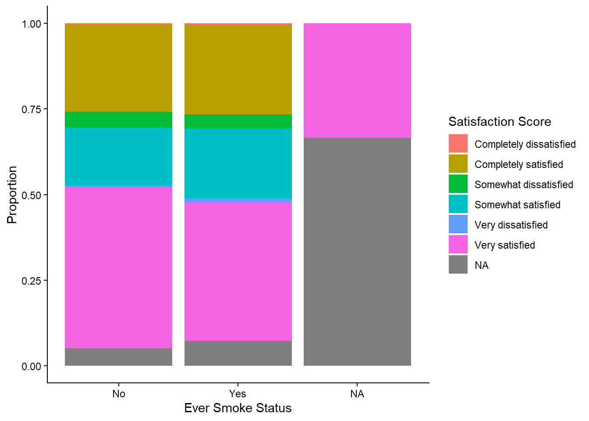
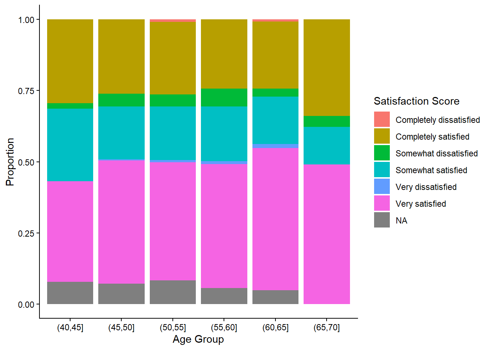

library(tidyverse)
library(gtsummary) ## make table 1
library(psych) ## descriptive stats for table 2
library(broom) ## clean object output
library(kableExtra) ## convert object outputs into table
library(stringr)
library(tidymodels)
library(jtools) ## needed for ordinal regression calculation
library(VGAM) ## needed for ordinal regression calculation Week 11: Homework
1 Set-up
1.1 Library
1.2 Load Data
1.3 Data Clean
tomhs <- tomhs %>%
mutate(Sex = if_else(sex == 1, "Male", "Female"),
Race = case_when(race == 1 ~ "White",
race == 2 ~ "Black",
race == 3 ~ "Asian",
race == 4 ~ "Other"),
Income = case_when(income == 1 ~ "Less than $9,999",
income == 2 ~ "$10,000 to $19,999",
income == 3 ~ "$20,000 to $29,999",
income == 4 ~ "$30,000 to $39,999",
income == 5 ~ "$40,000 to $49,999",
income == 6 ~ "$50,000 to $59,999",
income == 7 ~ "$60,000 to $69,999",
income == 8 ~ "$70,000 or more"),
Marital = case_when(marital == 1 ~ "Never married",
marital == 2 ~ "Separated",
marital == 3 ~ "Divorced",
marital == 4 ~ "Widowed",
marital == 5 ~ "Married"),
Education = case_when(educ == 1 ~"Eighth grade or less",
educ == 2 ~"Trade school or business school instead of high school",
educ == 3 ~"Some high school",
educ == 4 ~"High school graduate",
educ == 5 ~"Trade school or business school after graduating from high school",
educ == 6 ~"Some college including 2 year degrees",
educ == 7 ~"Received bachelor's degree",
educ == 8 ~"Graduate or professional education beyond the bachelor's degree",
educ == 9 ~ "Graduate or professional degree (Specify):"),
Eversmk = if_else(eversmk == 1, "Yes", "No"),
"Ql12_4" =
factor(
case_when(
ql12_4 == 1 ~ "Completely satisfied",
ql12_4 == 2 ~ "Very satisfied",
ql12_4 == 3 ~ "Somewhat satisfied",
ql12_4 == 4 ~ "Somewhat dissatisfied",
ql12_4 == 5 ~ "Very dissatisfied",
ql12_4 == 6 ~ "Completely dissatisfied"
),
ordered = TRUE)
)2 Exploratory Data Analysis
tbl_1 <- tomhs %>%
select(age, Sex, Race, Income, Marital, Education, Eversmk, Ql12_4) %>%
tbl_summary(
by = Eversmk,
label = list(
age = "Age",
Ql12_4 = "Satisfaction with physical ability at 12 months",
Eversmk = "Ever Smoked"
)
) %>%
add_overall() %>%
bold_labels() %>%
italicize_levels()
tbl_1| Characteristic | Overall N = 8991 |
No N = 4791 |
Yes N = 4201 |
|---|---|---|---|
| Age | 54 (50, 60) | 54 (50, 59) | 54 (49, 60) |
| Sex | |||
| Female | 345 (38%) | 222 (46%) | 123 (29%) |
| Male | 554 (62%) | 257 (54%) | 297 (71%) |
| Race | |||
| Asian | 10 (1.1%) | 7 (1.5%) | 3 (0.7%) |
| Black | 177 (20%) | 88 (18%) | 89 (21%) |
| Other | 6 (0.7%) | 4 (0.8%) | 2 (0.5%) |
| White | 706 (79%) | 380 (79%) | 326 (78%) |
| Income | |||
| $10,000 to $19,999 | 120 (14%) | 67 (15%) | 53 (13%) |
| $20,000 to $29,999 | 159 (19%) | 85 (19%) | 74 (18%) |
| $30,000 to $39,999 | 143 (17%) | 78 (17%) | 65 (16%) |
| $40,000 to $49,999 | 152 (18%) | 76 (17%) | 76 (19%) |
| $50,000 to $59,999 | 86 (10%) | 45 (9.9%) | 41 (10%) |
| $60,000 to $69,999 | 59 (6.9%) | 30 (6.6%) | 29 (7.2%) |
| $70,000 or more | 94 (11%) | 46 (10%) | 48 (12%) |
| Less than $9,999 | 44 (5.1%) | 29 (6.4%) | 15 (3.7%) |
| Unknown | 42 | 23 | 19 |
| Marital | |||
| Divorced | 90 (10%) | 43 (9.0%) | 47 (11%) |
| Married | 689 (77%) | 375 (78%) | 314 (75%) |
| Never married | 37 (4.1%) | 20 (4.2%) | 17 (4.1%) |
| Separated | 29 (3.2%) | 11 (2.3%) | 18 (4.3%) |
| Widowed | 53 (5.9%) | 30 (6.3%) | 23 (5.5%) |
| Unknown | 1 | 0 | 1 |
| Education | |||
| Eighth grade or less | 14 (1.6%) | 10 (2.1%) | 4 (1.0%) |
| Graduate or professional degree (Specify): | 126 (14%) | 78 (16%) | 48 (11%) |
| Graduate or professional education beyond the bachelor's degree | 70 (7.8%) | 35 (7.3%) | 35 (8.4%) |
| High school graduate | 211 (23%) | 123 (26%) | 88 (21%) |
| Received bachelor's degree | 132 (15%) | 74 (15%) | 58 (14%) |
| Some college including 2 year degrees | 177 (20%) | 77 (16%) | 100 (24%) |
| Some high school | 45 (5.0%) | 21 (4.4%) | 24 (5.7%) |
| Trade school or business school after graduating from high school | 116 (13%) | 58 (12%) | 58 (14%) |
| Trade school or business school instead of high school | 7 (0.8%) | 3 (0.6%) | 4 (1.0%) |
| Unknown | 1 | 0 | 1 |
| Satisfaction with physical ability at 12 months | |||
| Completely dissatisfied | 3 (0.4%) | 1 (0.2%) | 2 (0.5%) |
| Completely satisfied | 233 (28%) | 123 (27%) | 110 (28%) |
| Somewhat dissatisfied | 39 (4.6%) | 22 (4.8%) | 17 (4.4%) |
| Somewhat satisfied | 167 (20%) | 81 (18%) | 86 (22%) |
| Very dissatisfied | 7 (0.8%) | 2 (0.4%) | 5 (1.3%) |
| Very satisfied | 394 (47%) | 225 (50%) | 169 (43%) |
| Unknown | 56 | 25 | 31 |
| 1 Median (Q1, Q3); n (%) | |||
ggplot(tomhs, aes(x = Eversmk, fill = Ql12_4)) +
geom_bar(position = "fill") +
labs(x = "Ever Smoke Status",
y = "Proportion",
fill = "Satisfaction Score") +
theme_classic()
ggplot(tomhs, aes(x = cut(age, breaks = seq(40, 75, by = 5)), fill = Ql12_4)) +
geom_bar(position = "fill") +
labs(x = "Age Group",
y = "Proportion",
fill = "Satisfaction Score") +
theme_classic()